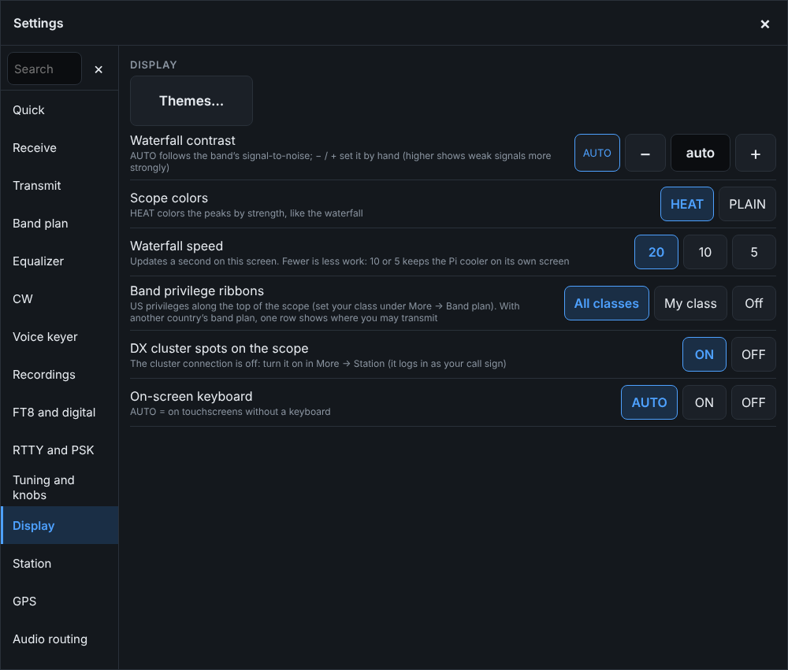
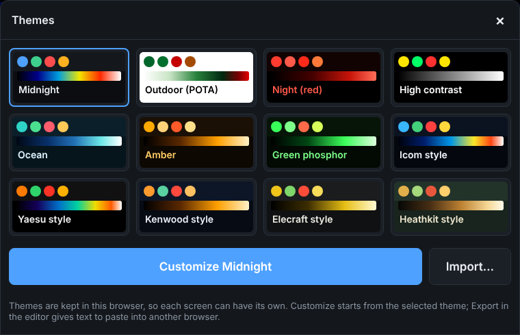
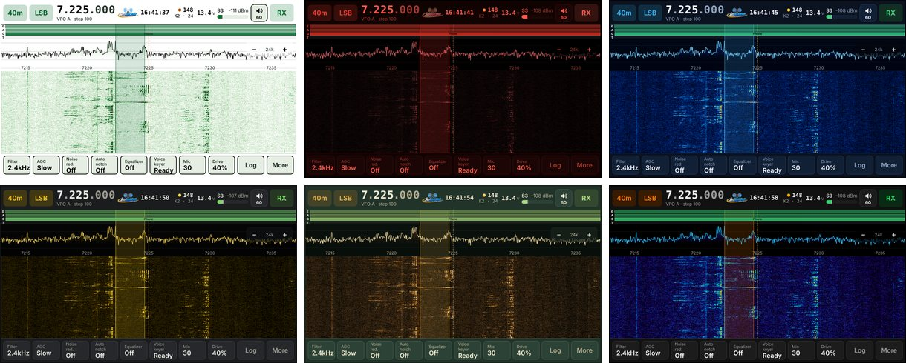

Display and themes#
More → Display holds the look of the screen. These settings are kept in each browser, so the radio's touchscreen and a phone can differ.

| Setting | What it does |
|---|---|
| Themes… | chooses the colors (below) |
| Waterfall contrast | AUTO (default) follows the band's signal-to-noise, so plain noise stays dark; − / + set a fixed contrast (higher shows weak signals more strongly) |
| Scope colors | HEAT colors the area under the trace by strength, like the waterfall; PLAIN doesn't |
| Waterfall speed | 20, 10 or 5 updates a second on this screen. Fewer means less work for the computer drawing it and less data over Wi-Fi. The radio's own screen starts at 10 (it keeps the Pi noticeably cooler), other devices at 20; each screen keeps its own choice. The battery saver still drops every screen to 5 |
| Band privilege ribbons | All classes, My class (from US license class) or Off. With another country's band plan, one row shows where you may transmit |
| DX cluster spots on the scope | show or hide the spot labels in this browser |
| On-screen keyboard | AUTO shows it on touchscreens without a keyboard |
Themes#
Themes… offers Midnight (the default), Outdoor (POTA), Night (red), High contrast, Ocean, Amber, Green phosphor, and Icom, Yaesu, Kenwood, Elecraft and Heathkit style. Each has its own waterfall colors. For night use pick Night (red).
Outdoor (POTA) is for operating in sunlight, on a park or summit activation: a white screen with black text, heavier lettering, thicker borders and a waterfall that runs from white through green to dark red, so signals still show on a screen in the sun. A radio that used the old Daylight theme gets it automatically.


Customize opens the selected theme in an editor with a live preview: every color, the waterfall palette and a red filter for night use. Save it as your own theme. Export gives the theme as text, and Import… on another browser takes it in.